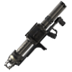

<!-- We don't need full layout here, because this page will be parsed with Ajax-->


<!-- Top Navbar-->
<div class="navbar">
  <div class="navbar-inner">
  <!--
    <div class="left"><a href="#" class="back link"><i class="icon icon-back-blue"></i><span>Back</span></a></div>
 
    <div class="center sliding">Hang Em' High</div>
  
    <div class="right">
      <!-- Right link contains only icon - additional "icon-only" class
      <a href="#" class="link icon-only open-panel"><i class="icon icon-bars-blue"></i></a>
    </div>
  -->
  </div>
</div>

<div class="pages">
  <!-- Page, data-page contains page name-->
  <div data-page="hhtimer" class="page no-navbar no-toolbar">
    <!-- Scrollable page content-->

 
      
        
<!--start my timer -->        


<div style="background:black; height:100%;" ng-app="timer-demo" ng-controller="TimerDemoController">

<!-- Start Landscape Navigation -->
	<div id="buttonLandDiv">
	<div class="landBtnContainer">
    <!-- Back Button -->    
      
        <a href="index.html" onclick="stopCheck()" class="back open-panel" data-panel="left" 
        data-reload="true" data-ignoreCache="true" 
        style="line-height:0; font-size:0; color:transparent;">
        &nbsp;
        <button id="backBtn" class="landBtn btn btn-inverse" onclick="" type="button">BACK</button>
        </a>
        	
	</div>
    
	<div class="landBtnContainer">       
    <!-- Options Button -->    
        <a href="#" data-panel="right" class="open-panel">
        <button id="optionsBtn" class="landBtn btn btn-inverse" 
		onclick="" type="button"><i class="icon-white icon-cog"></i></button>
        </a>	
    </div>
    
	<div class="landBtnContainer">
    <!-- Add 2 seconds Button -->    
        <button id="add2Btn" class="landBtn btn btn-info" 
		onclick="timerDelay1()" type="button">+ :02</button>
	<!-- Resume Button -->
        <button id="resumeBtn" style="display:none;" class="landBtn btn btn-inverse" 
        onclick="resumeBtn()" type="button">RESUME</button>
    </div>
    
	<div class="landBtnContainer">
    <!-- Stop Button -->
        <button id="stopBtn" class="landBtn btn btn-danger" 
        onclick="stopBtn()" type="button"><i class="icon-white icon-stop"></i></button>      
	<!-- Reset Button -->
        <button id="resetBtn" style="display:none;" class="landBtn btn btn-inverse" 
        onclick="refresh()" type="button">RESET</button>
    </div>                 

    </div>
<!-- End Landscape Navigation -->
    
	<div id="timerContainer">


<!-- Main-timer Open Div -->

<div id="main-timer" style="text-align:center; min-height:90px">

            <timer interval="1000" countdown="1800" autostart="false">
            <button onclick="timerStart()" id="startBtn" style="width:95%; height:100px; margin-top:10px; margin-bottom:10px;" class="btn btn-inverse btn-large"><i class="icon-white icon-play"></i> START</button>
            
            
            <div id="largeTime" style="display:none;">
            
            
            {{mminutes}}:<span id="sec">{{sseconds}}</span>

            </div>
            
           
    </timer>
   </div> <!-- close div for main-timer -->
              
  <!-- Begin Camo bar  --> 
  <div id="camo-timer">
<timer id="camoTimer" max-time-unit="'second'" interval="1000" autostart="false" countdown="0">           
            
                <div style="display:inline-block; width:80%;" class="progress progress-striped">
                    <div id="camoBar" class="bar">
	                     <div class="pUpContainer">
                         </div>
                            </div>
                            
                </div>
                
                <div class="smallTime">
                			
                            {{sseconds}}</div>
</timer>
</div>               
          


<!-- Begin OS bar  1 min count down-->


<div id="os-timer">
<timer id="osTimer" max-time-unit="'second'" interval="1000" countdown="" autostart="false">
	
<div style="display:inline-block; width:80%;" class="progress progress-danger">
                    <div id="osBar" class="bar">
	                     <div class="pUpContainer">
                         </div>
                            </div>
                            
                </div>
                
                <div class="smallTime">
                			
                         
                          {{sseconds}} </div>


</timer></div>


<!-- Begin Rocket bar  120 sec countdown-->

<div id="rocket-timer">
<timer id="rocketTimer" max-time-unit="'second'" interval="1000" countdown="" autostart="false">

<div style="display:inline-block; width:80%;" class="progress progress-warning">
                    <div id="rocketBar" class="bar">
	                     <div class="pUpContainer">
                         </div>
                            </div>
                            
                </div>
                
                <div class="smallTime">
                			
                            {{sseconds}}</div>

</timer>                                                        
</div>                    
                            

<!-- Map Title -->
<div id="mapName" class="row">

</div>
</div>


<!-- Button div -->
 <div id="buttonPortDiv">
	
<div id="buttonPortDivRow" class="row">
	<div class="col-25">
    <!-- Back Button -->    
        <a href="index.html" onclick="stopCheck()" class="back open-panel" data-panel="left" 
        data-reload="true" data-ignoreCache="true" 
        style="line-height:0; font-size:0; color:transparent;">
        &nbsp;
        <button id="backBtn" class="landBtn btn btn-inverse" onclick="" type="button">BACK</button>
        </a>
        		
	</div>
    
	<div class="col-25">        
    <!-- Options Button -->    
        <a href="#" data-panel="right" class="open-panel">
        <button id="optionsBtn" class="landBtn btn btn-inverse" 
		 type="button"><i class="icon-white icon-cog"></i></button>
        </a>	
    </div>
    
	<div class="col-25">
    <!-- Add 2 seconds Button -->    
        <button id="add2BtnP" class="landBtn btn btn-info" 
		onclick="timerDelay1()" type="button">+ :02</button>
	<!-- Resume Button -->
        <button id="resumeBtnP" style="display:none;" class="landBtn btn btn-inverse" 
        onclick="resumeBtn()" type="button">RESUME</button>
    </div>
    
	<div class="col-25">
    <!-- Stop Button -->
        <button id="stopBtnP" class="landBtn btn btn-danger" 
        onclick="stopBtn()" type="button"><i class="icon-white icon-stop"></i></button>      
	<!-- Reset Button -->
        <button id="resetBtnP" style="display:none;" class="landBtn btn btn-inverse" 
         type="button">RESET</button>
    </div>                 
</div>
</div>

<audio id="sec50" src="media/50sec.mp3" ></audio>
<audio id="sec40" src="media/40sec.mp3" ></audio> 
<audio id="sec30" src="media/30sec.mp3" preload="auto"></audio>
<audio id="sec20" src="media/20sec.mp3" preload="auto"></audio>
<audio id="sec10" src="media/10.mp3" preload="auto"></audio>
<audio id="sec9" src="media/9.mp3" preload="auto"></audio>
<audio id="sec8" src="media/8.mp3" preload="auto"></audio>
<audio id="sec7" src="media/7.mp3" preload="auto"></audio>
<audio id="sec6" src="media/6.mp3" preload="auto"></audio>
<audio id="sec5" src="media/5.mp3" preload="auto"></audio>
<audio id="sec4" src="media/4.mp3" preload="auto"></audio>
<audio id="sec3" src="media/3.mp3" preload="auto"></audio>
<audio id="sec2" src="media/2.mp3" preload="auto"></audio>
<audio id="sec1" src="media/1.mp3" preload="auto"></audio>
<audio id="beep" src="media/beepbeep.mp3" preload="auto"></audio>
        


        </div>
      </div>
    
